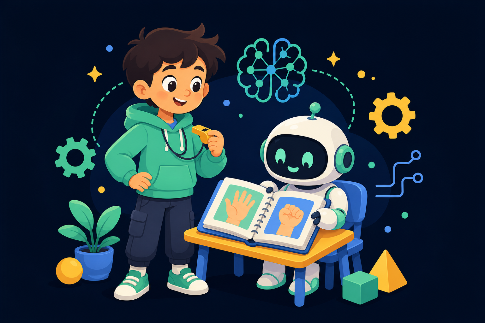
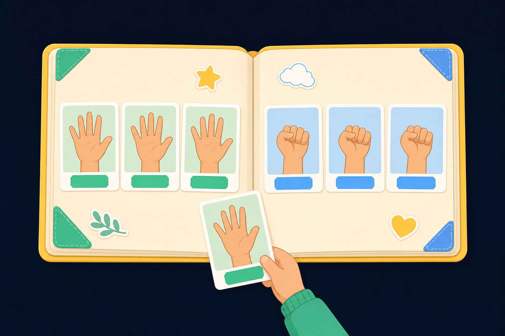
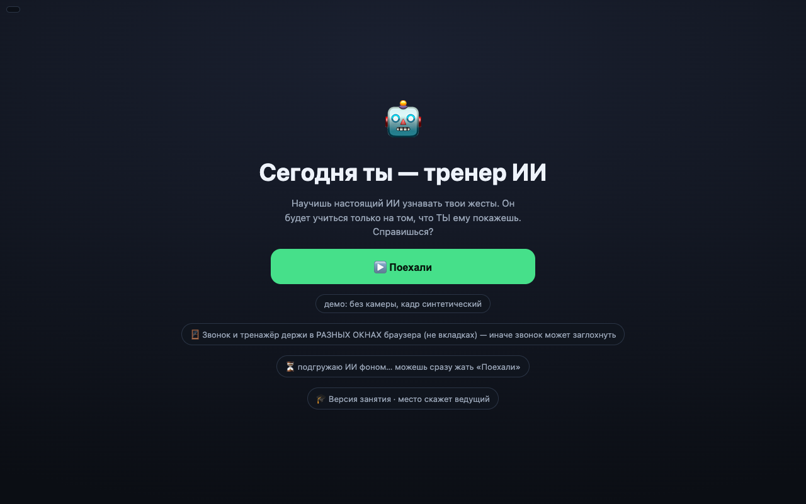
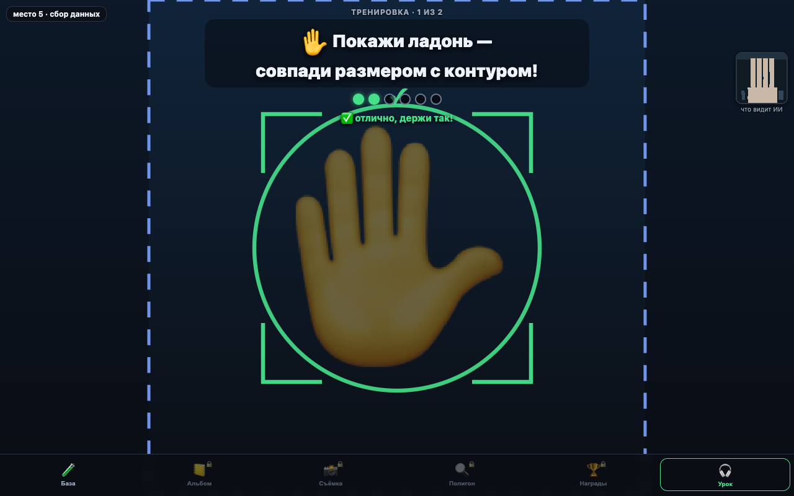
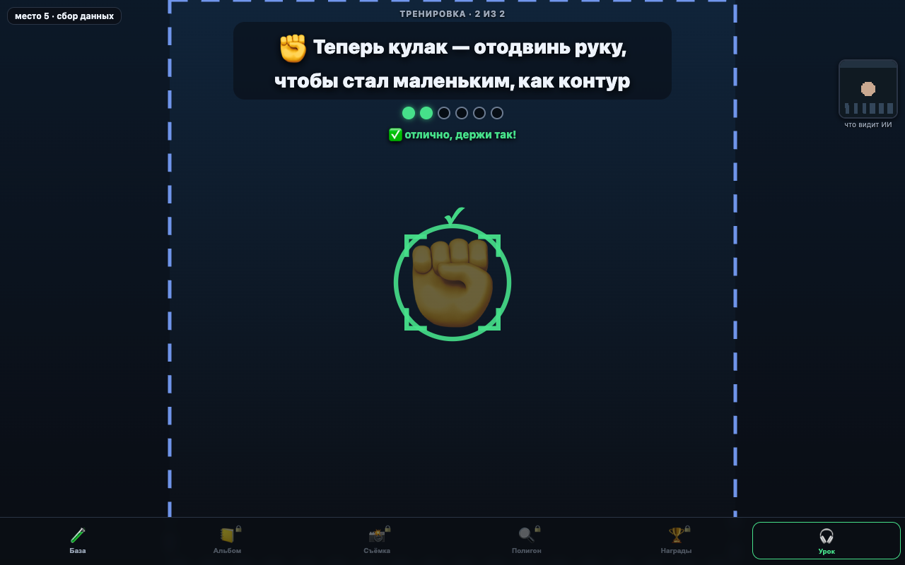
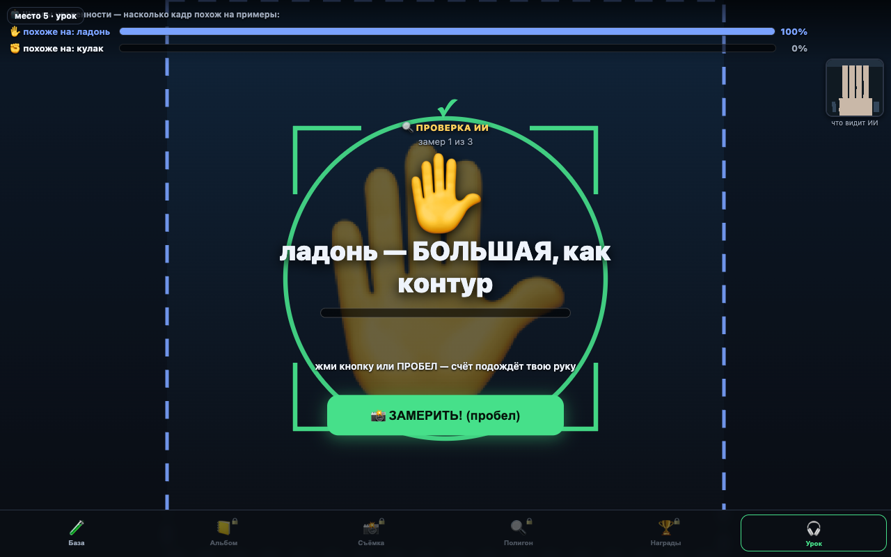
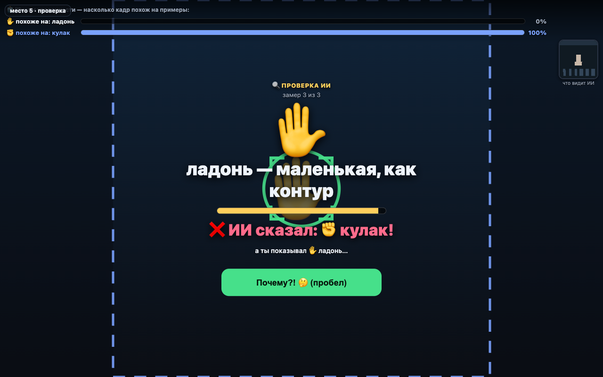
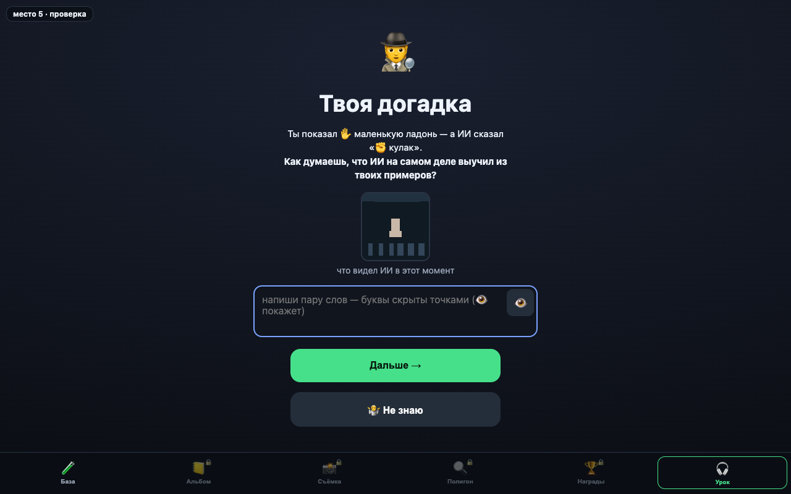
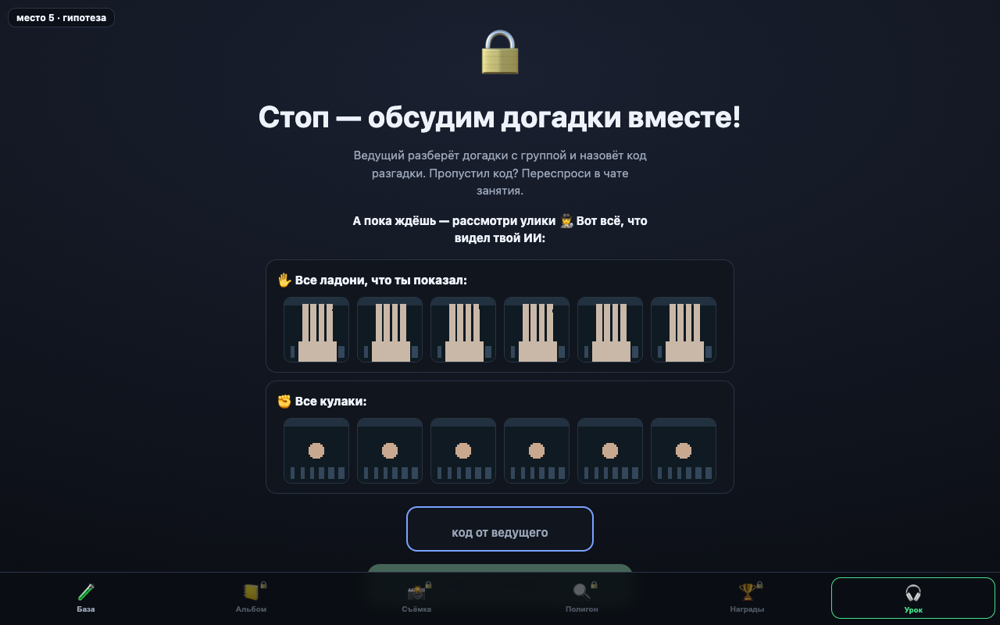
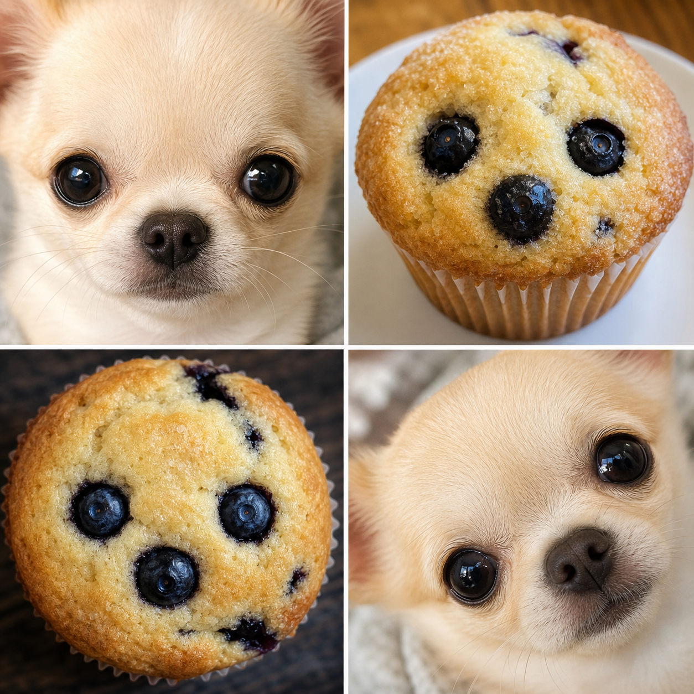

Обучи свой первый ИИ

Скоро начнём. Проверь, что тебя слышно.
💬 В ЧАТ
техпроверка · первые 10 минут
Готово, когда экран выглядит так
📞 Звонок
звук ✔ · 🎧 наушники ✔ · камера ВЫКЛ
+
🤖 Тренажёр
открыт по ссылке из бота ✔ · жди команду
Два разных окна браузера — не вкладки одного.
«+» когда у тебя так же
💬 В ЧАТ
🕵️
Ты — тренер ИИ
Ошибка ИИ — улика, а не авария 🔍
«+» если готов быть тренером
план миссии
Пять шагов детектива
📸🧠🔍🕵️🔧
два слова дня
У каждого примера — твоя подпись

ДАННЫЕ — примеры для ИИ
КЛАСС — вариант ответа: ✋ или ✊
🤖 В ТРЕНАЖЁР
ЭКРАН ТРЕНАЖЁРА — у тебя сейчас так
Жми «▶️ Поехали»

🛑 стоп на карточке «Научим ИИ ладони!» — жди команду
🤖 В ТРЕНАЖЁР
ЭКРАН ТРЕНАЖЁРА
Ладонь в контур — держи, ИИ снимает

🤖 В ТРЕНАЖЁР
ЭКРАН ТРЕНАЖЁРА
Теперь кулак — как просит контур

💬 В ЧАТ
ставка №1
Что твой ИИ заметит в примерах? 🎲
🖐 только форму
🌀 форму и ещё что-то
«форму» или «ещё что-то»
под капотом · что значит «обучен»
Кадр стал карточкой в альбоме
→
✋ладонь
карточка с твоей подписью→
Альбом — это учебник твоего ИИ. Больше он не знает ничего.
💬 В ЧАТ
игра: побудь своим ИИ · упрощённая схема
Не что правильно — как ответит твой ИИ?
Ответ дают самые похожие примеры
→
альбом:
✋ладонь
✋ладонь
✋ладонь
✊кулак
✊кулак
похожих больше у ✋
→ ответ: ЛАДОНЬ
как ответит ИИ: «✋» или «✊»?
клик → вскрытие
💬 В ЧАТ
ставка №2 · перед экзаменом
Экзамен: 3 проверки. Сколько сдаст?
✋как учил
✊как учил
✋сюрприз ⭐
своё число
📸🧠🔍🕵️🔧
🤖 В ТРЕНАЖЁР
ЭКРАН ТРЕНАЖЁРА
Экзамен: покажи — проверь 🔍

Запомни своё число из 3 — сравним после починки.
улика найдена
Очень уверен — и неправ

показал ✋
ответил ✊
похожие голосовали единогласно 🤔
🤖 В ТРЕНАЖЁР
ЭКРАН ТРЕНАЖЁРА
Запиши догадку. Идёт следствие 🤫

🛑 стоп на экране с замком — код скажу голосом
улики · твой альбом в тренажёре
Что общего внутри каждого ряда?

Нет своего под рукой — расследуй мой альбом на этом экране 👆
🤖 В ТРЕНАЖЁР
разгадка
Введи код — сверь догадку
🛑 «🔧 Починить ИИ» — пока не жми
почему так вышло
Этих случаев не было в альбоме
|
в твоём альбоме было два:
поэтому:
✋новый кадр
≈
✊
✊
маленькая ладонь похожа на маленькие кулаки
😏 Признаёмся: ловушку подстроили мы. Ты всё сделал правильно.
слово дня: признак
Ладонь — ответ. Размер — подсказка
| класс ✋ | класс ✊ |
|---|
| крупно |
✋ |
✊ |
|---|
| мелко |
✋ |
✊ |
|---|
КЛАСС = ответ
ПРИЗНАК = подсказка для сравнения
🧘
5:00
вернулся — «+» в чат 💬
📸🧠🔍🕵️🔧
план починки
Меняем одно — проверяем то же
→
→
➕
добавить
недостающие примеры
→
слово дня: контрпример
Примеры-спорщики ломают подсказку
было: размер выдаёт ответ
→
стало: размер один не выдаёт ответ
большое = ладонь
КОНТРПРИМЕР (пример-спорщик) — спорит с простым правилом
🤖 В ТРЕНАЖЁР
ЭКРАН ТРЕНАЖЁРА
Чем починим? Выбери сам
Добавь: маленькую ✋ и большой ✊
🛑 стоп на карточке «Починка готова!» — проверяем вместе
клик → после выбора
💬 В ЧАТ
финальный замер
Те же три задания + одно новое
|
✋ |
✊ |
✋ |
✊новый! |
|---|
| до | твой ✔/✘ | твой ✔/✘ | твой ✔/✘ | — |
|---|
| после | ? | ? | ? | ? |
|---|
«было 1 из 3 → после 3 из 4»
🛑 на финальном экране ничего не жми — код будет позже
🤖 В ТРЕНАЖЁР
закрой дело
Три вопроса детектива: код 33
🔒 Дальше — по коду ведущего
→
33
→
код: 3 3
1 · «Мой ИИ ошибался, потому что…»
2 · «Я починил тем, что…»
3 · «Ещё я добавил бы…»
своими словами · пары фраз хватит · 2 минуты
клик → вопросы
💬 В ЧАТ
бонус · минутка признаков
Чихуахуа или маффин? 🐶🧁
Похожая подсказка бывает случайной

тёмные точки: глаза? ягоды?
цвет: шерсть? тесто?
круглое: морда? кекс?
по каким признакам отличаешь?
клик → разбор
📸🧠🔍🕵️🔧
а в настоящем ИИ? · признаки бывают и в звуке
Особым голосам — свои примеры
🧒
детский голосАлиса узнаёт по голосу, что говорит ребёнок → включает детский режим
🤫
шёпотшёпот пришлось учить отдельно — понадобились свои примеры
💬 В ЧАТ
главный вопрос разработчика ИИ
Кого и чего нет в данных?
представим, в данных есть
|
кого добавишь первым?
💬 В ЧАТ
финал
Ты прошёл все пять шагов 🏆
И последний вопрос…
📜 сертификат — в Наградах 🏆
🏠 домашка: покажи родителям свою Базу
⚡ в Съёмке 📸 — 3 миссии детектива
пошёл бы на следующее занятие? «да» / «нет» / «не знаю»
клик → последний вопрос